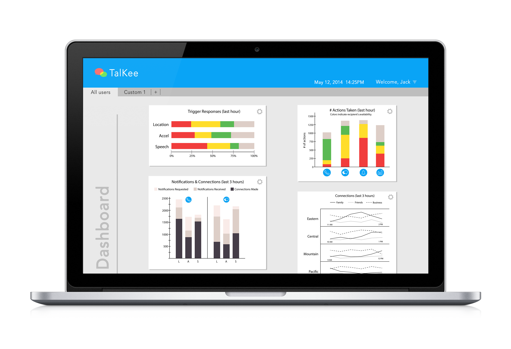

Allow close friends to see each other's availability and connect conveniently.


- Because it broadcasts one’s availability, TalKee is primarily used between close friends, so you won’t have a ton of contacts in this app. The user’s close friends could see his/her availability and decide whether to call, chat, notify the user, or simply check his availability graph.
- We think that such concept could be used in other situations (business, etc.) where people need to know if it’s a good time to contact one another.

Process:
Let me tell you how we got here. With over 10 interviews, we found out that the biggest problem among parents and adult children is that parents don’t know when is the right time to contact their children, as a result, it turns out to be intrusive.
According to what we found, I made the personas and scenarios.
We looked into the possible sensors a smartphone could have, and brainstormed ideas to use the sensors to detect availability.
Navigation Map:
I created wireframes of tutorial pages when the app is being used for the first time: